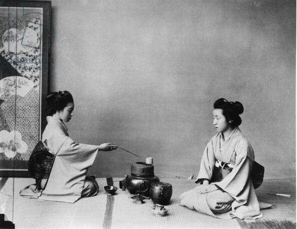

От дикого листа
к искусству茶道
Несколько тысячелетий назад в туманных высокогорьях древнего Китая чай начинался не как повседневный напиток, а как целебное снадобье и духовная практика даосских монахов и поэтов эпох Тан и Сун.
Чайный лист собирал в себе дыхание земли, горный туман и чистую воду, становясь для человека проводником к внутреннему покою и тишине. С веками простое питье превратилось в священное искусство внимания, где важна каждая капля, температура огня и движение руки.
Вкус, раскрывающийся во времени
Истинный китайский чай никогда не заваривают единожды в большой кружке. Его жизнь раскрывается методом «Пин ча» (品茶) — серией быстрых, точных проливов через глиняную гайвань, чахай («чашу справедливости») и миниатюрные пиалы.
Первый пролив смывает чайную пыль и пробуждает аромат листа. Второй дарит легкое знакомство, а третий и четвертый открывают саму суть сорта — будь то медовая глубина уишаньского улуна, сливочная свежесть Те Гуань Инь или вековая бархатность пуэра из Юньнани. В этом ритуале нет спешки: время замирает.
Chinoiserie — диалог двух миров
Слово Шинуазри (Chinoiserie) родилось в Европе как искреннее восхищение тонкостью восточной цивилизации. Это был мост, соединивший строгую классику с загадкой китайского фарфора, шелка, лаковых шкатулок и древней чайной традицией.
Для нас эта эстетика стала вдохновением. Мы видим чай не как архаичный музейный экспонат, а как живое, высокое искусство — на стыке азиатского минимализма, кутюрных архивных коллекций и чистого вкуса.
Обитель в сердце города
В ритме современного города особенно остро чувствуется необходимость в месте, где можно сделать глубокий вдох и замедлиться. Так родилось наше камерное пространство во Владимире.
Здесь приглушен свет, тихо играет виниловый джаз, пахнет прогретым чайным листом и родниковой водой, а в воздухе царит атмосфера доброго дружеского круга. Это дом для тех, кто ценит стиль, тишину и подлинный вкус.